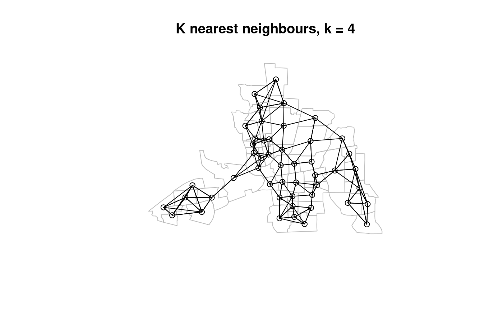
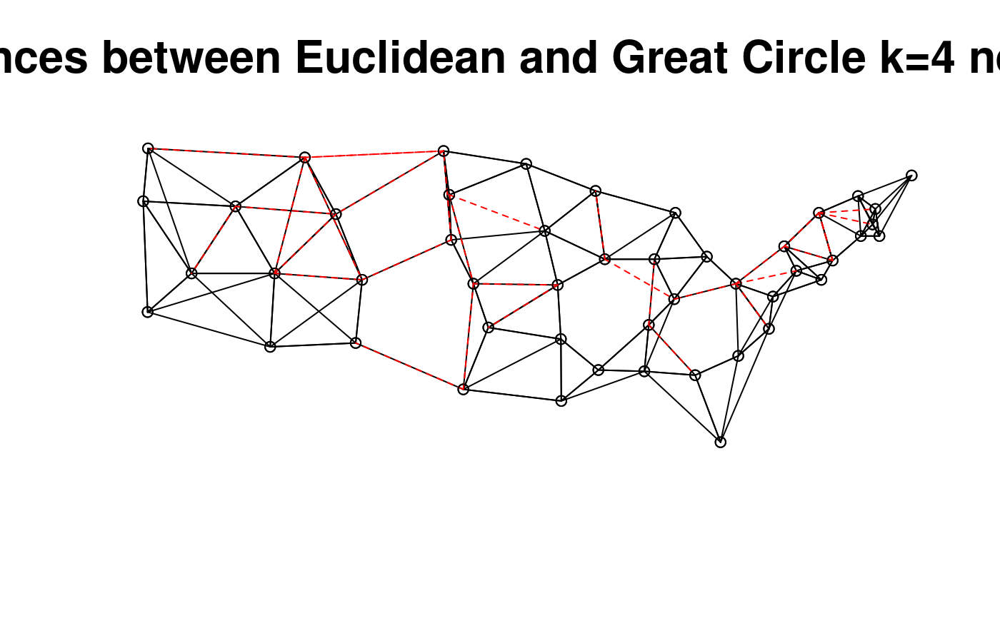

knearneigh.RdThe function returns a matrix with the indices of points belonging to the set of the k nearest neighbours of each other. If longlat = TRUE, Great Circle distances are used. A warning will be given if identical points are found.
knearneigh(x, k=1, longlat = NULL, RANN=TRUE)
| x | matrix of point coordinates or a SpatialPoints object |
|---|---|
| k | number of nearest neighbours to be returned |
| longlat | TRUE if point coordinates are longitude-latitude decimal degrees, in which case distances are measured in kilometers; if x is a SpatialPoints object, the value is taken from the object itself |
| RANN | logical value, if the RANN package is available, use for finding k nearest neighbours when longlat is FALSE, and when there are no identical points |
The underlying C code is based on the knn function in the class package.
A list of class knn
integer matrix of region number ids
number of input points
input required k
number of columns of x
input coordinates
knn, dnearneigh,
knn2nb, nn2
run <- FALSE if (require("sf", quietly=TRUE)) run <- TRUE if (run) { columbus <- st_read(system.file("shapes/columbus.shp", package="spData")[1], quiet=TRUE) } if (run) { coords <- coordinates(as(columbus, "Spatial")) col.knn <- knearneigh(coords, k=4) plot(st_geometry(columbus), border="grey") plot(knn2nb(col.knn), coords, add=TRUE) title(main="K nearest neighbours, k = 4") }data(state) us48.fipsno <- read.geoda(system.file("etc/weights/us48.txt", package="spdep")[1]) if (as.numeric(paste(version$major, version$minor, sep="")) < 19) { m50.48 <- match(us48.fipsno$"State.name", state.name) } else { m50.48 <- match(us48.fipsno$"State_name", state.name) } xy <- as.matrix(as.data.frame(state.center))[m50.48,] llk4.nb <- knn2nb(knearneigh(xy, k=4, longlat=FALSE)) gck4.nb <- knn2nb(knearneigh(xy, k=4, longlat=TRUE)) plot(llk4.nb, xy)#> Neighbour list object: #> Number of regions: 48 #> Number of nonzero links: 192 #> Percentage nonzero weights: 8.333333 #> Average number of links: 4 #> Non-symmetric neighbours list #> Link number distribution: #> #> 4 #> 48 #> 48 least connected regions: #> 1 2 3 4 5 6 7 8 9 10 11 12 13 14 15 16 17 18 19 20 21 22 23 24 25 26 27 28 29 30 31 32 33 34 35 36 37 38 39 40 41 42 43 44 45 46 47 48 with 4 links #> 48 most connected regions: #> 1 2 3 4 5 6 7 8 9 10 11 12 13 14 15 16 17 18 19 20 21 22 23 24 25 26 27 28 29 30 31 32 33 34 35 36 37 38 39 40 41 42 43 44 45 46 47 48 with 4 links #> Summary of link distances: #> Min. 1st Qu. Median Mean 3rd Qu. Max. #> 93.66 297.56 393.72 414.78 513.25 956.71 #> #> The decimal point is 2 digit(s) to the right of the | #> #> 0 | 99 #> 1 | 00112233 #> 1 | 666699 #> 2 | 00222222334444444444 #> 2 | 6677889999 #> 3 | 00000111112222222233333333334444 #> 3 | 556666777788899999 #> 4 | 0000001111233 #> 4 | 555555666666677788888899 #> 5 | 0011111111122222222344444 #> 5 | 55666679 #> 6 | 00233 #> 6 | 5667 #> 7 | 011234 #> 7 | 5889 #> 8 | 022 #> 8 | 79 #> 9 | #> 9 | 56 #>#> Neighbour list object: #> Number of regions: 48 #> Number of nonzero links: 192 #> Percentage nonzero weights: 8.333333 #> Average number of links: 4 #> Non-symmetric neighbours list #> Link number distribution: #> #> 4 #> 48 #> 48 least connected regions: #> 1 2 3 4 5 6 7 8 9 10 11 12 13 14 15 16 17 18 19 20 21 22 23 24 25 26 27 28 29 30 31 32 33 34 35 36 37 38 39 40 41 42 43 44 45 46 47 48 with 4 links #> 48 most connected regions: #> 1 2 3 4 5 6 7 8 9 10 11 12 13 14 15 16 17 18 19 20 21 22 23 24 25 26 27 28 29 30 31 32 33 34 35 36 37 38 39 40 41 42 43 44 45 46 47 48 with 4 links #> Summary of link distances: #> Min. 1st Qu. Median Mean 3rd Qu. Max. #> 93.66 297.09 393.72 410.42 508.50 953.23 #> #> The decimal point is 2 digit(s) to the right of the | #> #> 0 | 99 #> 1 | 00112233 #> 1 | 666699 #> 2 | 00222222334444444444 #> 2 | 66778899999 #> 3 | 000000111112222222233333333334444 #> 3 | 5566677778888999 #> 4 | 0000001111233 #> 4 | 5555556666666777788888899 #> 5 | 00011111111122222223444444 #> 5 | 56667899 #> 6 | 00233 #> 6 | 56 #> 7 | 0001124 #> 7 | 55899 #> 8 | 022 #> 8 | 9 #> 9 | #> 9 | 5 #>xy1 <- SpatialPoints((as.data.frame(state.center))[m50.48,], proj4string=CRS("+proj=longlat +ellps=GRS80")) gck4a.nb <- knn2nb(knearneigh(xy1, k=4)) summary(gck4a.nb, xy1)#> Neighbour list object: #> Number of regions: 48 #> Number of nonzero links: 192 #> Percentage nonzero weights: 8.333333 #> Average number of links: 4 #> Non-symmetric neighbours list #> Link number distribution: #> #> 4 #> 48 #> 48 least connected regions: #> 1 2 3 4 5 6 7 8 9 10 11 12 13 14 15 16 17 18 19 20 21 22 23 24 25 26 27 28 29 30 31 32 33 34 35 36 37 38 39 40 41 42 43 44 45 46 47 48 with 4 links #> 48 most connected regions: #> 1 2 3 4 5 6 7 8 9 10 11 12 13 14 15 16 17 18 19 20 21 22 23 24 25 26 27 28 29 30 31 32 33 34 35 36 37 38 39 40 41 42 43 44 45 46 47 48 with 4 links #> Summary of link distances: #> Min. 1st Qu. Median Mean 3rd Qu. Max. #> 93.66 297.09 393.72 410.42 508.50 953.23 #> #> The decimal point is 2 digit(s) to the right of the | #> #> 0 | 99 #> 1 | 00112233 #> 1 | 666699 #> 2 | 00222222334444444444 #> 2 | 66778899999 #> 3 | 000000111112222222233333333334444 #> 3 | 5566677778888999 #> 4 | 0000001111233 #> 4 | 5555556666666777788888899 #> 5 | 00011111111122222223444444 #> 5 | 56667899 #> 6 | 00233 #> 6 | 56 #> 7 | 0001124 #> 7 | 55899 #> 8 | 022 #> 8 | 9 #> 9 | #> 9 | 5 #>